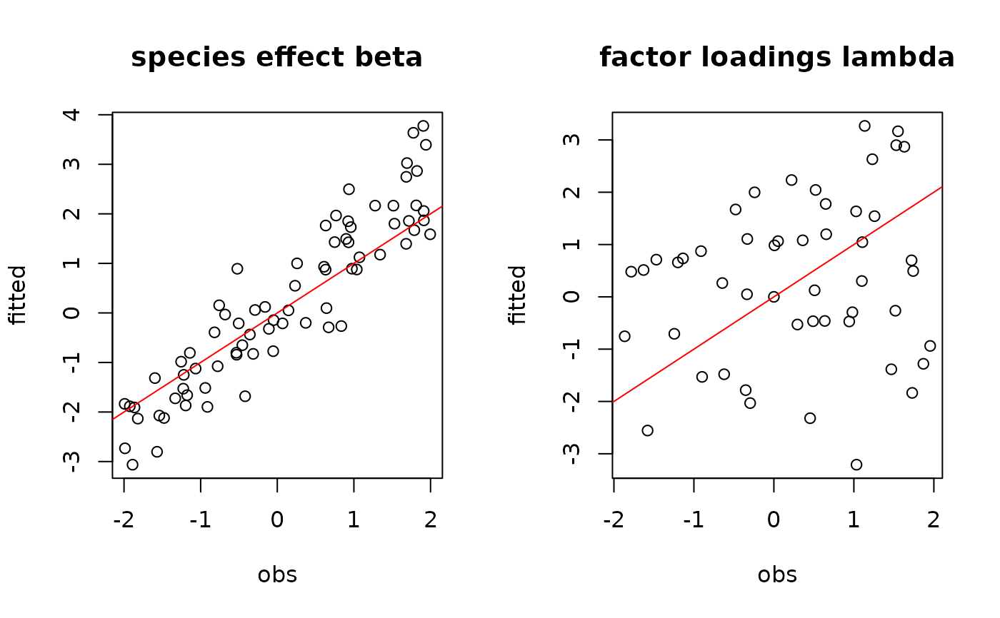
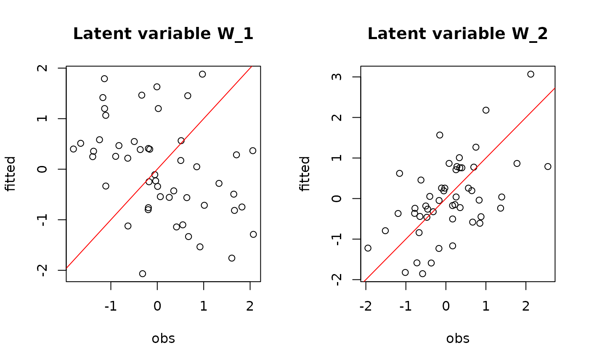
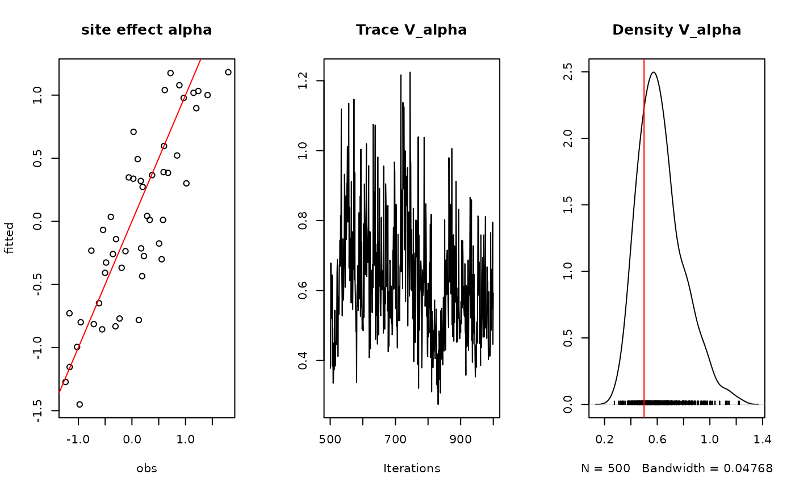
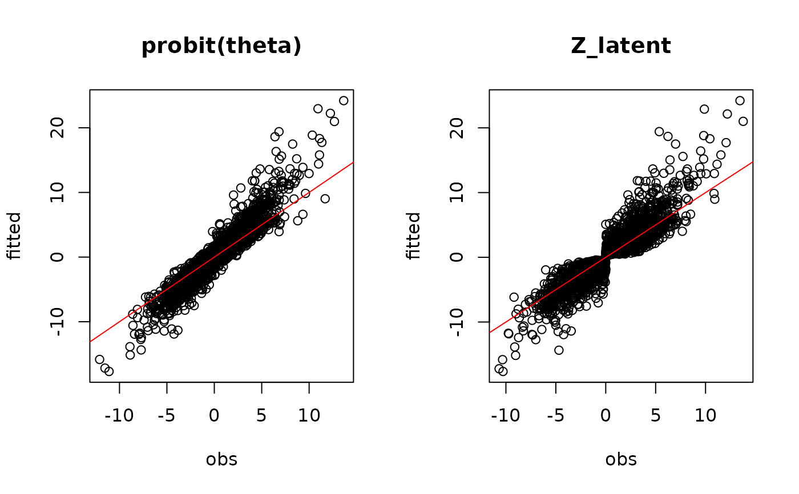
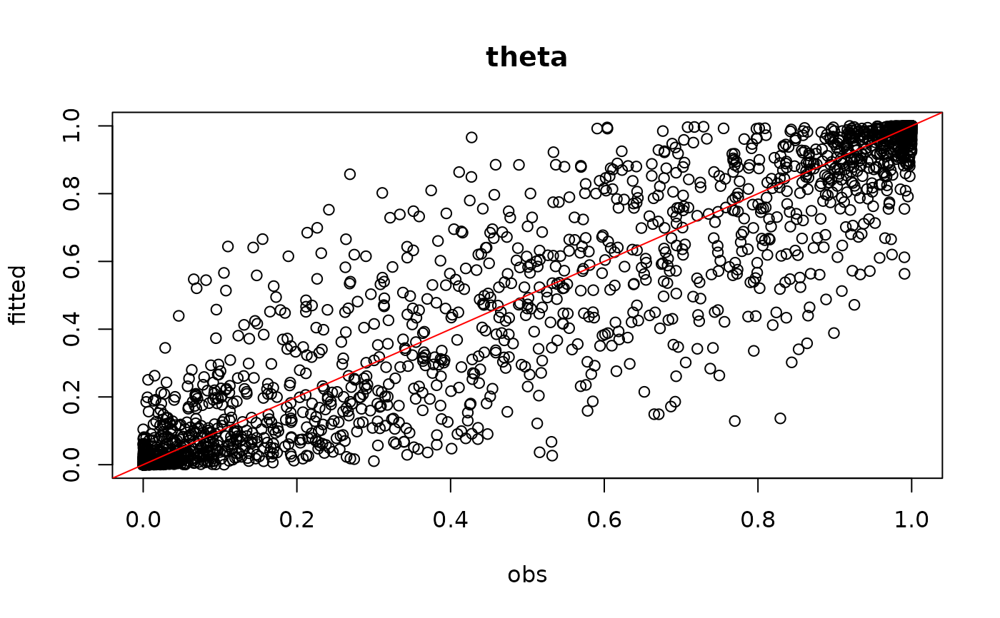
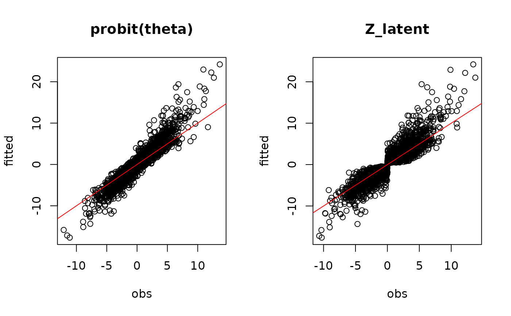
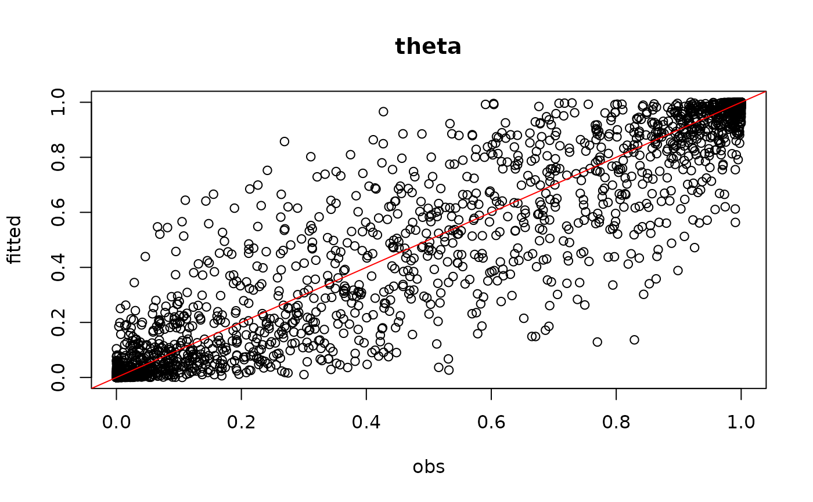

Binomial probit regression on long format data
Source:R/jSDM_binomial_probit_long_format.R
jSDM_binomial_probit_long_format.RdThe jSDM_binomial_probit_long_format function performs a Binomial probit regression in a Bayesian framework.
The function calls a Gibbs sampler written in C++ code which uses conjugate priors to estimate the conditional posterior distribution of model's parameters.
jSDM_binomial_probit_long_format(
burnin = 5000,
mcmc = 10000,
thin = 10,
data,
site_formula,
n_latent = 0,
site_effect = "none",
alpha_start = 0,
gamma_start = 0,
beta_start = 0,
lambda_start = 0,
W_start = 0,
V_alpha = 1,
shape = 0.5,
rate = 5e-04,
mu_gamma = 0,
V_gamma = 10,
mu_beta = 0,
V_beta = 10,
mu_lambda = 0,
V_lambda = 10,
seed = 1234,
verbose = 1
)Arguments
- burnin
The number of burnin iterations for the sampler.
- mcmc
The number of Gibbs iterations for the sampler. Total number of Gibbs iterations is equal to
burnin+mcmc.burnin+mcmcmust be divisible by 10 and superior or equal to 100 so that the progress bar can be displayed.- thin
The thinning interval used in the simulation. The number of mcmc iterations must be divisible by this value.
- data
A
data.framewith at least the following columns :Y\(n_{obs}\)-length vector indicating the presence by a 1 (or absence by a 0), of the species observed during each visit of the sites. sitenumeric or character \(n_{obs}\)-length vector indicating the visited site, (sites can be visited several times). speciesnumeric or character eqnn_obsn_obs-length vector indicating the species observed, (species may not have been recorded at all sites). x1,...,xpcolumns of explanatory variables for the suitability process of the model. - site_formula
A one-sided formula, as the formulas used by the
lmfunction, of the form: '~ x1 + ... + xd + species:x1 + ... + species:xp' with \(p\) terms related to species effects \(\beta\), specifying the explanatory variables for the suitability process of the model, including the intercept, different from the \(d\) terms related to \(\gamma\) parameters.- n_latent
An integer which specifies the number of latent variables to generate. Defaults to \(0\).
- site_effect
A string indicating whether row effects are included as fixed effects (
"fixed"), as random effects ("random"), or not included ("none") in the model. If fixed effects, then for parameter identifiability the first row effect is set to zero, which analogous to acting as a reference level when dummy variables are used. If random effects, they are drawn from a normal distribution with mean zero and unknown variance, analogous to a random intercept in mixed models. Defaults to"none".- alpha_start
Starting values for random site effect parameters must be either a scalar or a \(n_{site}\)-length vector, ignored if
site_effect="none". Ifalpha_starttakes a scalar value, then that value will serve for all of the \(\alpha\) parameters.- gamma_start
Starting values for gamma parameters of the suitability process must be either a scalar or a \(d\)-length vector. If
gamma_starttakes a scalar value, then that value will serve for all of the \(\gamma\) parameters.- beta_start
Starting values for beta parameters of the suitability process for each species must be either a scalar or a \(p \times n_{species}\) matrix. If
beta_starttakes a scalar value, then that value will serve for all of the \(\beta\) parameters.- lambda_start
Starting values for lambda parameters corresponding to the latent variables for each species must be either a scalar or a \(n_{latent} \times n_{species}\) upper triangular matrix with strictly positive values on the diagonal, ignored if
n_latent=0. Iflambda_starttakes a scalar value, then that value will serve for all of the \(\lambda\) parameters except those concerned by the constraints explained above.- W_start
Starting values for latent variables must be either a scalar or a \(nsite \times n_latent\) matrix, ignored if
n_latent=0. IfW_starttakes a scalar value, then that value will serve for all of the \(W_{il}\) with \(i=1,\ldots,n_{site}\) and \(l=1,\ldots,n_{latent}\).- V_alpha
Starting value for variance of random site effect if
site_effect="random"or constant variance of the Gaussian prior distribution for the fixed site effect ifsite_effect="fixed". Must be a strictly positive scalar, ignored ifsite_effect="none".- shape
Shape parameter of the Inverse-Gamma prior for the random site effect variance
V_alpha, ignored ifsite_effect="none"orsite_effect="fixed". Must be a strictly positive scalar. Default to 0.5 for weak informative prior.- rate
Rate parameter of the Inverse-Gamma prior for the random site effect variance
V_alpha, ignored ifsite_effect="none"orsite_effect="fixed"Must be a strictly positive scalar. Default to 0.0005 for weak informative prior.- mu_gamma
Means of the Normal priors for the \(\gamma\) parameters of the suitability process.
mu_gammamust be either a scalar or a \(d\)-length vector. Ifmu_gammatakes a scalar value, then that value will serve as the prior mean for all of the \(\gamma\) parameters. The default value is set to 0 for an uninformative prior.- V_gamma
Variances of the Normal priors for the \(\gamma\) parameters of the suitability process.
V_gammamust be either a scalar or a \(d \times d\) symmetric positive semi-definite square matrix. IfV_gammatakes a scalar value, then that value will serve as the prior variance for all of the \(\gamma\) parameters, so the variance covariance matrix used in this case is diagonal with the specified value on the diagonal. The default variance is large and set to1e+06for an uninformative flat prior.- mu_beta
Means of the Normal priors for the \(\beta\) parameters of the suitability process.
mu_betamust be either a scalar or a \(p\)-length vector. Ifmu_betatakes a scalar value, then that value will serve as the prior mean for all of the \(\beta\) parameters. The default value is set to 0 for an uninformative prior.- V_beta
Variances of the Normal priors for the \(\beta\) parameters of the suitability process.
V_betamust be either a scalar or a \(p \times p\) symmetric positive semi-definite square matrix. IfV_betatakes a scalar value, then that value will serve as the prior variance for all of the \(\beta\) parameters, so the variance covariance matrix used in this case is diagonal with the specified value on the diagonal. The default variance is large and set to1e+06for an uninformative flat prior.- mu_lambda
Means of the Normal priors for the \(\lambda\) parameters corresponding to the latent variables.
mu_lambdamust be either a scalar or a \(n_{latent}\)-length vector. Ifmu_lambdatakes a scalar value, then that value will serve as the prior mean for all of the \(\lambda\) parameters. The default value is set to 0 for an uninformative prior.- V_lambda
Variances of the Normal priors for the \(\lambda\) parameters corresponding to the latent variables.
V_lambdamust be either a scalar or a \(n_{latent} \times n_{latent}\) symmetric positive semi-definite square matrix. IfV_lambdatakes a scalar value, then that value will serve as the prior variance for all of \(\lambda\) parameters, so the variance covariance matrix used in this case is diagonal with the specified value on the diagonal. The default variance is large and set to 10 for an uninformative flat prior.- seed
The seed for the random number generator. Default to 1234.
- verbose
A switch (0,1) which determines whether or not the progress of the sampler is printed to the screen. Default is 1: a progress bar is printed, indicating the step (in %) reached by the Gibbs sampler.
Value
An object of class "jSDM" acting like a list including :
- mcmc.alpha
An mcmc object that contains the posterior samples for site effects \(\alpha_i\), not returned if
site_effect="none".- mcmc.V_alpha
An mcmc object that contains the posterior samples for variance of random site effect, not returned if
site_effect="none"orsite_effect="fixed".- mcmc.latent
A list by latent variable of mcmc objects that contains the posterior samples for latent variables \(W_l\) with \(l=1,\ldots,n_{latent}\), not returned if
n_latent=0.- mcmc.sp
A list by species of mcmc objects that contains the posterior samples for species effects \(\beta\) and the loading factors \(\lambda\) if
n_latent>0.- mcmc.gamma
An mcmc objects that contains the posterior samples for parameters \(\gamma\) not returned if
d=0.- mcmc.Deviance
The posterior sample of the deviance \(D\) is also provided, with \(D\) defined as:\(D=-2\log(\prod_{n} P(y_{n}|\beta_j,\lambda_j, \alpha_i, W_i))\).
- Z_latent
Predictive posterior mean of the latent variable Z.
- probit_theta_latent
Predictive posterior mean of the probability to each species to be present on each site, transformed by probit link function.
- theta_latent
Predictive posterior mean of the probability to each species to be present on each site.
- model_spec
Various attributes of the model fitted, including the response and model matrix used, distributional assumptions as link function, family and number of latent variables, hyperparameters used in the Bayesian estimation and mcmc, burnin and thin.
The mcmc. objects can be summarized by functions provided by the coda package.
Details
We model an ecological process where the presence or absence of species \(j\) on site \(i\) is explained by habitat suitability.
Ecological process: $$y_n \sim \mathcal{B}ernoulli(\theta_n)$$ such as \(species_n=j\) and \(site_n=i\), where :
if n_latent=0 and site_effect="none" | probit\((\theta_n) = D_n \gamma + X_n \beta_j\) |
if n_latent>0 and site_effect="none" | probit\((\theta_n) = D_n \gamma+ X_n \beta_j + W_i \lambda_j\) |
if n_latent=0 and site_effect="fixed" | probit\((\theta_n) = D_n \gamma + X_n \beta_j + \alpha_i\) and \(\alpha_i \sim \mathcal{N}(0,V_\alpha)\) |
if n_latent>0 and site_effect="fixed" | probit\((\theta_n) = D_n \gamma + X_n \beta_j + W_i \lambda_j + \alpha_i\) |
if n_latent=0 and site_effect="random" | probit\((\theta_n) = D_n \gamma + X_n \beta_j + \alpha_i\) |
if n_latent>0 and site_effect="random" | probit\((\theta_n) = D_n \gamma + X_n \beta_j + W_i \lambda_j + \alpha_i\) and \(\alpha_i \sim \mathcal{N}(0,V_\alpha)\) |
References
Chib, S. and Greenberg, E. (1998) Analysis of multivariate probit models. Biometrika, 85, 347-361.
Warton, D. I.; Blanchet, F. G.; O'Hara, R. B.; O'Hara, R. B.; Ovaskainen, O.; Taskinen, S.; Walker, S. C. and Hui, F. K. C. (2015) So Many Variables: Joint Modeling in Community Ecology. Trends in Ecology & Evolution, 30, 766-779.
Examples
#==============================================
# jSDM_binomial_probit_long_format()
# Example with simulated data
#==============================================
#=================
#== Load libraries
library(jSDM)
#==================
#== Data simulation
#= Number of sites
nsite <- 50
#= Set seed for repeatability
seed <- 1234
set.seed(seed)
#' #= Number of species
nsp <- 25
#= Number of latent variables
n_latent <- 2
#'
# Ecological process (suitability)
## X
x1 <- rnorm(nsite,0,1)
x1.2 <- scale(x1^2)
X <- cbind(rep(1,nsite),x1,x1.2)
colnames(X) <- c("Int","x1","x1.2")
np <- ncol(X)
## W
W <- matrix(rnorm(nsite*n_latent,0,1),nrow=nsite,byrow=TRUE)
## D
SLA <- runif(nsp,-1,1)
D <- data.frame(x1.SLA= scale(c(x1 %*% t(SLA))))
nd <- ncol(D)
## parameters
beta.target <- t(matrix(runif(nsp*np,-2,2), byrow=TRUE, nrow=nsp))
mat <- t(matrix(runif(nsp*n_latent,-2,2), byrow=TRUE, nrow=nsp))
diag(mat) <- runif(n_latent,0,2)
lambda.target <- matrix(0,n_latent,nsp)
gamma.target <-runif(nd,-1,1)
lambda.target[upper.tri(mat,diag=TRUE)] <- mat[upper.tri(mat,
diag=TRUE)]
#= Variance of random site effect
V_alpha.target <- 0.5
#= Random site effect
alpha.target <- rnorm(nsite,0,sqrt(V_alpha.target))
## probit_theta
probit_theta <- c(X %*% beta.target) + c(W %*% lambda.target) +
as.matrix(D) %*% gamma.target + rep(alpha.target, nsp)
# Supplementary observation (each site have been visited twice)
# Environmental variables at the time of the second visit
x1_supObs <- rnorm(nsite,0,1)
x1.2_supObs <- scale(x1^2)
X_supObs <- cbind(rep(1,nsite),x1_supObs,x1.2_supObs)
D_supObs <- data.frame(x1.SLA=scale(c(x1_supObs %*% t(SLA))))
probit_theta_supObs <- c(X_supObs%*%beta.target) + c(W%*%lambda.target) +
as.matrix(D_supObs) %*% gamma.target + alpha.target
probit_theta <- c(probit_theta, probit_theta_supObs)
nobs <- length(probit_theta)
e <- rnorm(nobs,0,1)
Z_true <- probit_theta + e
Y<-rep(0,nobs)
for (n in 1:nobs){
if ( Z_true[n] > 0) {Y[n] <- 1}
}
Id_site <- rep(1:nsite,nsp)
Id_sp <- rep(1:nsp,each=nsite)
data <- data.frame(site=rep(Id_site,2), species=rep(Id_sp,2), Y=Y,
x1=c(rep(x1,nsp),rep(x1_supObs,nsp)),
x1.2=c(rep(x1.2,nsp),rep(x1.2_supObs,nsp)),
x1.SLA=c(D$x1.SLA,D_supObs$x1.SLA))
# missing observation
data <- data[-1,]
#==================================
#== Site-occupancy model
# Increase number of iterations (burnin and mcmc) to get convergence
mod<-jSDM_binomial_probit_long_format( # Iteration
burnin=500,
mcmc=500,
thin=1,
# Response variable
data=data,
# Explanatory variables
site_formula=~ (x1 + x1.2):species + x1.SLA,
n_latent=2,
site_effect="random",
# Starting values
alpha_start=0,
gamma_start=0,
beta_start=0,
lambda_start=0,
W_start=0,
V_alpha=1,
# Priors
shape=0.5, rate=0.0005,
mu_gamma=0, V_gamma=10,
mu_beta=0, V_beta=10,
mu_lambda=0, V_lambda=10,
seed=1234, verbose=1)
#>
#> Running the Gibbs sampler. It may be long, please keep cool :)
#>
#> **********:10.0%
#> **********:20.0%
#> **********:30.0%
#> **********:40.0%
#> **********:50.0%
#> **********:60.0%
#> **********:70.0%
#> **********:80.0%
#> **********:90.0%
#> **********:100.0%
#= Parameter estimates
# gamma
par(mfrow=c(2,2))
for(d in 1:nd){
coda::traceplot(mod$mcmc.gamma[,d])
coda::densplot(mod$mcmc.gamma[,d],
main = colnames(mod$mcmc.gamma)[d])
abline(v=gamma.target[d],col='red')
}
## beta_j
# summary(mod$mcmc.sp$sp_1[,1:ncol(X)])
mean_beta <- matrix(0,nsp,ncol(X))
pdf(file=file.path(tempdir(), "Posteriors_beta_jSDM_probit.pdf"))
par(mfrow=c(ncol(X),2))
for (j in 1:nsp) {
mean_beta[j,] <- apply(mod$mcmc.sp[[j]]
[,1:ncol(X)], 2, mean)
for (p in 1:ncol(X)){
coda::traceplot(mod$mcmc.sp[[j]][,p])
coda::densplot(mod$mcmc.sp[[j]][,p],
main = paste0(colnames(mod$mcmc.sp[[j]])[p],"_sp",j))
abline(v=beta.target[p,j],col='red')
}
}
dev.off()
#> agg_png
#> 2
## lambda_j
# summary(mod$mcmc.sp$sp_1[,(ncol(X)+1):(ncol(X)+n_latent)])
# summary(mod$mcmc.sp$sp_2[,(ncol(X)+1):(ncol(X)+n_latent)])
mean_lambda <- matrix(0,nsp,n_latent)
pdf(file=file.path(tempdir(), "Posteriors_lambda_jSDM_probit.pdf"))
par(mfrow=c(n_latent*2,2))
for (j in 1:nsp) {
mean_lambda[j,] <- apply(mod$mcmc.sp[[j]]
[,(ncol(X)+1):(ncol(X)+n_latent)], 2, mean)
for (l in 1:n_latent) {
coda::traceplot(mod$mcmc.sp[[j]][,ncol(X)+l])
coda::densplot(mod$mcmc.sp[[j]][,ncol(X)+l],
main=paste0(colnames(mod$mcmc.sp[[j]])[ncol(X)+l], "_sp",j))
abline(v=lambda.target[l,j],col='red')
}
}
dev.off()
#> agg_png
#> 2
# Species effects beta and factor loadings lambda
par(mfrow=c(1,2))
plot(t(beta.target), mean_beta,
main="species effect beta",
xlab ="obs", ylab ="fitted")
abline(a=0,b=1,col='red')
plot(t(lambda.target), mean_lambda,
main="factor loadings lambda",
xlab ="obs", ylab ="fitted")
abline(a=0,b=1,col='red')

## W latent variables
par(mfrow=c(1,2))
for (l in 1:n_latent) {
plot(W[,l],
summary(mod$mcmc.latent[[paste0("lv_",l)]])[[1]][,"Mean"],
main = paste0("Latent variable W_", l),
xlab ="obs", ylab ="fitted")
abline(a=0,b=1,col='red')
}

## alpha
# summary(mod$mcmc.alpha)
par(mfrow=c(1,3))
plot(alpha.target, summary(mod$mcmc.alpha)[[1]][,"Mean"],
xlab ="obs", ylab ="fitted", main="site effect alpha")
abline(a=0,b=1,col='red')
## Valpha
coda::traceplot(mod$mcmc.V_alpha, main="Trace V_alpha")
coda::densplot(mod$mcmc.V_alpha,main="Density V_alpha")
abline(v=V_alpha.target,col='red')

## Deviance
#summary(mod$mcmc.Deviance)
plot(mod$mcmc.Deviance)
 #= Predictions
## probit_theta
# summary(mod$probit_theta_latent)
par(mfrow=c(1,2))
plot(probit_theta[-1],mod$probit_theta_latent,
main="probit(theta)",xlab="obs",ylab="fitted")
abline(a=0,b=1,col='red')
## Z
# summary(mod$Z_latent)
plot(Z_true[-1],mod$Z_latent,
main="Z_latent", xlab="obs", ylab="fitted")
abline(a=0,b=1,col='red')

## theta
# summary(mod$theta_latent)
par(mfrow=c(1,1))
plot(pnorm(probit_theta[-1]),mod$theta_latent,
main="theta",xlab="obs",ylab="fitted")
abline(a=0,b=1,col='red')

#= Predictions
## probit_theta
# summary(mod$probit_theta_latent)
par(mfrow=c(1,2))
plot(probit_theta[-1],mod$probit_theta_latent,
main="probit(theta)",xlab="obs",ylab="fitted")
abline(a=0,b=1,col='red')
## Z
# summary(mod$Z_latent)
plot(Z_true[-1],mod$Z_latent,
main="Z_latent", xlab="obs", ylab="fitted")
abline(a=0,b=1,col='red')

## theta
# summary(mod$theta_latent)
par(mfrow=c(1,1))
plot(pnorm(probit_theta[-1]),mod$theta_latent,
main="theta",xlab="obs",ylab="fitted")
abline(a=0,b=1,col='red')
